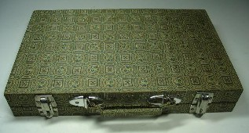

麻雀関連のオークションを見ていたら、実に不思議な牌を見つけた。
商品説明には、「上海土産の中古麻雀牌」とある。たしかに、その通り。どう見ても、上海あたりで販売されている土産用の麻雀牌。σ(-_-)も何セットも持っている普及品。それはいいけれど、この上海牌、平型の木箱に入っている。それがなんとも不思議だった。
一般的に、現在、中国で売られている麻雀牌は、こんな手提げ式のケースに入っているのが普通。

平型木箱にはみたところ点棒収納用としか思えない小箱がついている。もちろん手提げ式のケース入りの上海牌だって、外国人向け（特に日本人向け）であるから点棒用の小箱and点棒がついている。
平型木箱の点棒箱は、小さくて４人分の点棒が入るとは思えない。じっさいに点棒もセットされていない。ほいじゃあ、単に予備牌を入れておくだけの小箱なのか？
それもなんかなぁ....
そこで画像を見ながら、いったいこれはどういう牌かと、しばし考え込んだ。しかし考えたって分からんものは分からん。(^-^； 実物を見たほうが話が早い。出品価格も廉価だったので、落札してしまった。
無事送られてきたセットを見て納得した。この平型木箱は、いままでは簡単な手提げケースに替わる新製品だった。たぶん手提げケースでは安っぽい、木箱入りの方がリッパに見えるというので、新たに作られたものと思われる。＃たしかに、しっかりした良い作りだった。
小箱もやはり点棒箱だった。サイズが小さいのは、４人分の点棒が入ろうと入るまいと、売る方にとってはどうでもいいからだろう。別に珍奇牌ではないが、面白かったのでuｐした。
|